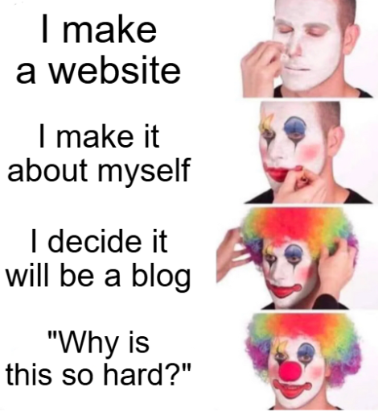
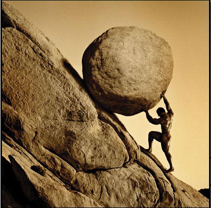

About
Who am I?
While I refer to myself as Kotlet or Kotlecik (depends on my mood), that is obviously not my real name. Why did I choose the pseudonym Kotlet? Because I like to eat them. Also it is my username on most game platforms but that's less important
Some more facts about me: I'm platinum 1 on Rocket league; practicaly a champion at this point, I'm a briar and vex main in LOL, I like games and manga and I have an unhealthy obsession with buying and opening Yu-Gi-Oh cards; they're just so cool and i know how to play the game so they're kinda useful although i only really use one deck. Fallen of Albaz for the win!!!
Why does this exist?
You see this entire website exists because of one thing: A college assignment. The task I was given was to create a minimum-5-page website about one topic. I was given the choice of any topic I could think of but that was waaaaaayy too many choice for my little mind to handle so i decided on the most simple topic of all, and the topic I know the most about: Myself!

"But of all things why would you choose to do a blog?" you may be asking yourself, but that is a pretty silly question. Think about it. It's a blog. Usually blogs are created about someone who wants to document their days on this earth, so I might as well do the same.

Will this ever be used?
Whilst I have put immense amounts of time and effort into this website, I will most likely forget about it within two days after I've managed to relax from the mental stress, suffering and insanity i have lived through during the creation process of this. Maybe if I ever feel like writing about a particularly eventful day or an epic moment in a game tournament I'll come back and update the blog with a new entry for said day. But (at least for now) I'll leave the site for at least a day so my mind, fingers and soul can chill out.

Such a waste of effort am I right? Nah, probably not. Why? Oh it's because I'll probably end up doing this same thing over and over and over and over again, creating website after website, filling my github repositories with websites that will never be edited. Just like Sisyphus I'll reach the top only to have to start back at the bottom except I do this by my own will.